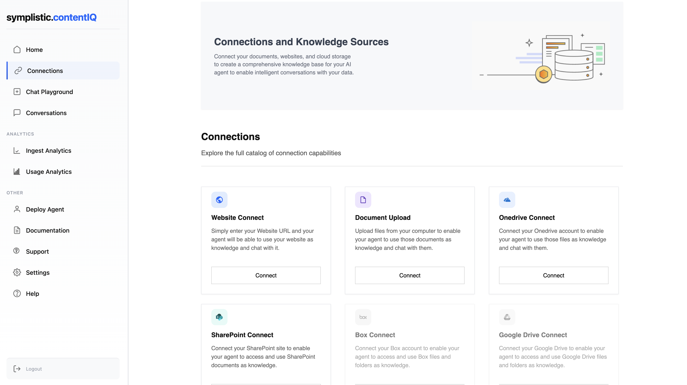

Introducing ContentIQ by symplistic.ai
Turning enterprise knowledge into action with AI agents
Today symplistic.ai is launching ContentIQ, a next-generation AI agent designed to transform static enterprise knowledge into dynamic, contextual intelligence. Built on IBM watsonx Orchestrate, ContentIQ goes beyond traditional chatbots by reasoning, retrieving, and acting within workflows, not just answering questions.
ContentIQ is purpose-built to reduce operational friction, accelerate decision-making, and help teams spend less time searching and more time delivering value. ContentIQ ingests documents, helpdesk content, internal repositories and websites, then applies an advanced retrieval-augmented generation (RAG) to deliver accurate, source-cited answers. The agent learns from user queries, detects stale or missing data, and surfaces insights to continuously improve content quality.
"We're redefining how enterprises interact with their knowledge," said Steven Astorino, Chief Executive Officer of symplistic.ai. "By building ContentIQ on watsonx Orchestrate, we've combined trusted automation with advanced conversational AI, enabling businesses to deliver accurate, explainable answers in minutes while triggering real actions across their systems."
Enterprises can embed ContentIQ as a white-labeled widget or integrate it into existing systems to:
• Cut knowledge search time by 50%, saving hours per employee per week.
• Deflect 20–40% of support tickets, reducing operational overhead.
• Boost sales productivity, driving higher close rates and faster deal cycles.
• Improve compliance and governance, with audit logs, explanation traces, and role-based access controls.
ContentIQ is already being used to streamline internal operations, support customer-facing teams, and unlock new efficiencies across industries. By integrating with IBM's orchestration capabilities, it brings a new level of responsiveness and intelligence to enterprise environments.
"Collaborating with innovators like symplistic.ai is core to our mission of helping enterprises unlock the full value of AI," said Suzanne Livingston, Vice President of watsonx Orchestrate, IBM. "By integrating ContentIQ into the watsonx Orchestrate ecosystem, we're not just expanding the capabilities available to our clients, we are accelerating their path to intelligent automation, trusted decision-making, and real business outcomes."
Stay tuned for more updates as symplistic.ai continues to push the boundaries of agentic AI.
About symplistic.ai
symplistic.ai builds domain-specific AI agents that integrate seamlessly into enterprise workflows. Focused on real-world tasks, compliance, and explainability, symplistic.ai helps organizations unlock the full potential of intelligent automation safely and at scale.
Contact: info@symplistic.ai
Website: www.symplistic.ai
Phone: (239) 319-5540